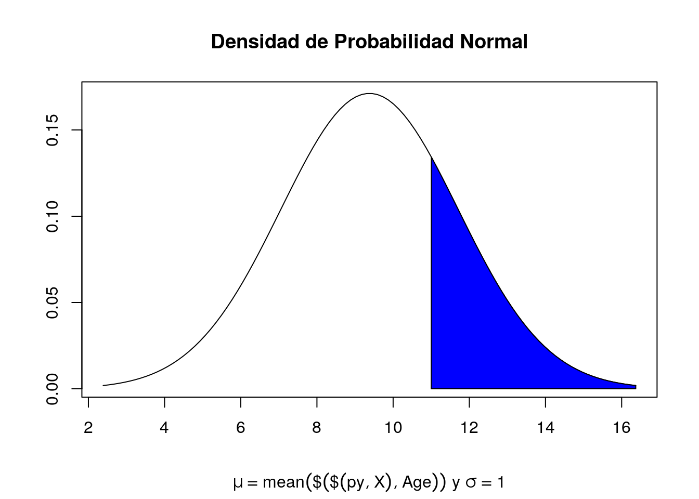

from ucimlrepo import fetch_ucirepo
import matplotlib.pyplot as plt
import seaborn as sns
import pandas as pdData Analysis Modulo 5
Importar las librerias de python
Traer los datos del repositorio a un dataframe
cdc_diabetes_health_indicators = fetch_ucirepo(id=891) Asignar los atributos y el target a un dataframe
X = cdc_diabetes_health_indicators.data.features
y = cdc_diabetes_health_indicators.data.targets Mostrar los metadatos disponibles
print(cdc_diabetes_health_indicators.metadata) {'uci_id': 891, 'name': 'CDC Diabetes Health Indicators', 'repository_url': 'https://archive.ics.uci.edu/dataset/891/cdc+diabetes+health+indicators', 'data_url': 'https://archive.ics.uci.edu/static/public/891/data.csv', 'abstract': 'The Diabetes Health Indicators Dataset contains healthcare statistics and lifestyle survey information about people in general along with their diagnosis of diabetes. The 35 features consist of some demographics, lab test results, and answers to survey questions for each patient. The target variable for classification is whether a patient has diabetes, is pre-diabetic, or healthy. ', 'area': 'Health and Medicine', 'tasks': ['Classification'], 'characteristics': ['Tabular', 'Multivariate'], 'num_instances': 253680, 'num_features': 21, 'feature_types': ['Categorical', 'Integer'], 'demographics': ['Sex', 'Age', 'Education Level', 'Income'], 'target_col': ['Diabetes_binary'], 'index_col': ['ID'], 'has_missing_values': 'no', 'missing_values_symbol': None, 'year_of_dataset_creation': 2017, 'last_updated': 'Fri Nov 03 2023', 'dataset_doi': '10.24432/C53919', 'creators': [], 'intro_paper': {'title': 'Incidence of End-Stage Renal Disease Attributed to Diabetes Among Persons with Diagnosed Diabetes — United States and Puerto Rico, 2000–2014', 'authors': 'Nilka Rios Burrows, MPH; Israel Hora, PhD; Linda S. Geiss, MA; Edward W. Gregg, PhD; Ann Albright, PhD', 'published_in': 'Morbidity and Mortality Weekly Report', 'year': 2017, 'url': 'https://www.cdc.gov/mmwr/volumes/66/wr/mm6643a2.htm', 'doi': None}, 'additional_info': {'summary': 'Dataset link: https://www.cdc.gov/brfss/annual_data/annual_2014.html', 'purpose': 'To better understand the relationship between lifestyle and diabetes in the US', 'funded_by': 'The CDC', 'instances_represent': 'Each row represents a person participating in this study.', 'recommended_data_splits': 'Cross validation or a fixed train-test split could be used.', 'sensitive_data': '- Gender\n- Income\n- Education level', 'preprocessing_description': 'Bucketing of age', 'variable_info': '- Diabetes diagnosis\n- Demographics (race, sex)\n- Personal information (income, educations)\n- Health history (drinking, smoking, mental health, physical health)', 'citation': None}, 'external_url': 'https://www.kaggle.com/datasets/alexteboul/diabetes-health-indicators-dataset'}Mostrar información sobre las variables
print(cdc_diabetes_health_indicators.variables) name role ... units missing_values
0 ID ID ... None no
1 Diabetes_binary Target ... None no
2 HighBP Feature ... None no
3 HighChol Feature ... None no
4 CholCheck Feature ... None no
5 BMI Feature ... None no
6 Smoker Feature ... None no
7 Stroke Feature ... None no
8 HeartDiseaseorAttack Feature ... None no
9 PhysActivity Feature ... None no
10 Fruits Feature ... None no
11 Veggies Feature ... None no
12 HvyAlcoholConsump Feature ... None no
13 AnyHealthcare Feature ... None no
14 NoDocbcCost Feature ... None no
15 GenHlth Feature ... None no
16 MentHlth Feature ... None no
17 PhysHlth Feature ... None no
18 DiffWalk Feature ... None no
19 Sex Feature ... None no
20 Age Feature ... None no
21 Education Feature ... None no
22 Income Feature ... None no
[23 rows x 7 columns]Mostrar los datos estadisticos de los atributos (features)
X.describe() HighBP HighChol ... Education Income
count 253680.000000 253680.000000 ... 253680.000000 253680.000000
mean 0.429001 0.424121 ... 5.050434 6.053875
std 0.494934 0.494210 ... 0.985774 2.071148
min 0.000000 0.000000 ... 1.000000 1.000000
25% 0.000000 0.000000 ... 4.000000 5.000000
50% 0.000000 0.000000 ... 5.000000 7.000000
75% 1.000000 1.000000 ... 6.000000 8.000000
max 1.000000 1.000000 ... 6.000000 8.000000
[8 rows x 21 columns]Unir los atributos y los targets en un dataframe
df = pd.concat([X,y],axis=1)
X = pd.concat([X,y],axis=1)Se buscan los atributos que puedan tener una correlación
Primero la correlación positiva
correlation_matrix = df.corr()
top_columns = correlation_matrix['Diabetes_binary'].sort_values(ascending=False).head(5).index
print(top_columns)Index(['Diabetes_binary', 'GenHlth', 'HighBP', 'DiffWalk', 'BMI'], dtype='object')sns.heatmap(df[top_columns].corr(), annot=True, cmap='coolwarm')
plt.title('Correlation Heatmap')
plt.show()Despues la correlación negativa
correlation_matrix = df.corr()
top_columns_inverse = correlation_matrix['Diabetes_binary'].sort_values(ascending=True).head(4).index
top_columns_inverse = top_columns_inverse.append(pd.Index(['Diabetes_binary']))
print(top_columns_inverse)Index(['Income', 'Education', 'PhysActivity', 'HvyAlcoholConsump',
'Diabetes_binary'],
dtype='object')sns.heatmap(df[top_columns_inverse].corr(), annot=True, cmap='coolwarm')
plt.title('Inverse Correlation Heatmap')
plt.show()Filtrar el dataset X para que solo contenga datos donde el diagnostico de diabetes sea positivo
X = X[X.Diabetes_binary==1]Se continua con el proceso usando R
library(reticulate)
hist(py$X$Age,
breaks = 20,
main = " Histograma de Edad",
ylab = "Y",
xlab = "X",
col = "blue")Con base en la gráfica podemos decir que la variable edad tiene una distribución normal con una media aproximada a la categoría 11.
Por lo que queremos demostrar que las personas mayores a la media son propensas a diabetes.
Hipotesis h0 = pacientes con diagnostico de diabetes tienen una edad mayor o igual a la categoría 11.
x <- seq(-3, 3, length = 100) * sd(py$X$Age) + mean(py$X$Age)
y <- dnorm(x, mean = mean(py$X$Age), sd = sd(py$X$Age))
plot(x, y, type = "l", xlab="", ylab="")
title(main = "Densidad de Probabilidad Normal", sub = expression(paste(mu == mean(py$X$Age), " y ", sigma == 1)))
polygon(c(11, x[x>=11], max(x)), c(0, y[x>=11], 0), col="blue")
media <- mean(py$X$Age)
ds <- sd(py$X$Age)
n <- length(py$X$Age)
error <- qnorm(0.975)*ds/sqrt(n)
izq <- media-error
der <- media+error
print(paste("Límite inferior del intervalo de confianza 97.5%: ",izq, sep=""))[1] "Límite inferior del intervalo de confianza 97.5%: 9.35475958982194"print(paste("Límite superior del intervalo de confianza 97.5%: ",der, sep=""))[1] "Límite superior del intervalo de confianza 97.5%: 9.40334599496842"Con una confianza del 97.5% se concluye que la hipotesis se rechaza. Un paciente que se encuentra en la categoria 11 o mayor no tiene un diagnostico de diabetes.
# library(ggplot2)
# library(scales)
# # Define the parameters for the beta distribution
# alpha <- 5
# beta <- 2
# # Generate x values
# x <- seq(0, 1, length.out = 100)
# # Calculate the beta function
# beta_function <- dbeta(x, alpha, beta)
# # Create a data frame for plotting
# data <- data.frame(x = x, beta_function = beta_function)
# # Plot the beta function
# ggplot(data, aes(x = x, y = beta_function)) +
# geom_line() +
# labs(x = "X", y = "Beta Function") +
# scale_x_continuous(labels = percent_format()) +
# ggtitle("Beta Function for py$X$Age")# from scipy.stats import beta
# # Define the parameters for the beta distribution
# alpha = 5
# Beta = 2
# # Apply beta to py$X$Age
# py_X_Age_beta = beta.pdf(X['Age'], alpha, Beta)
# sns.relplot(x = X['Age'], y = py_X_Age_beta)
# plt.show()